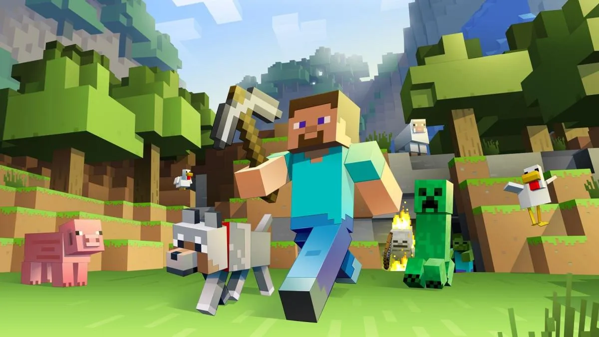
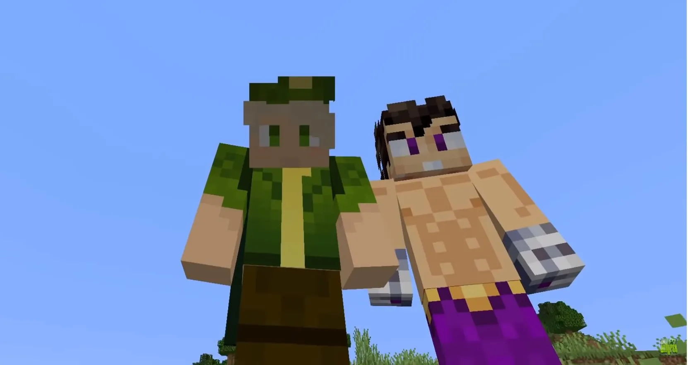
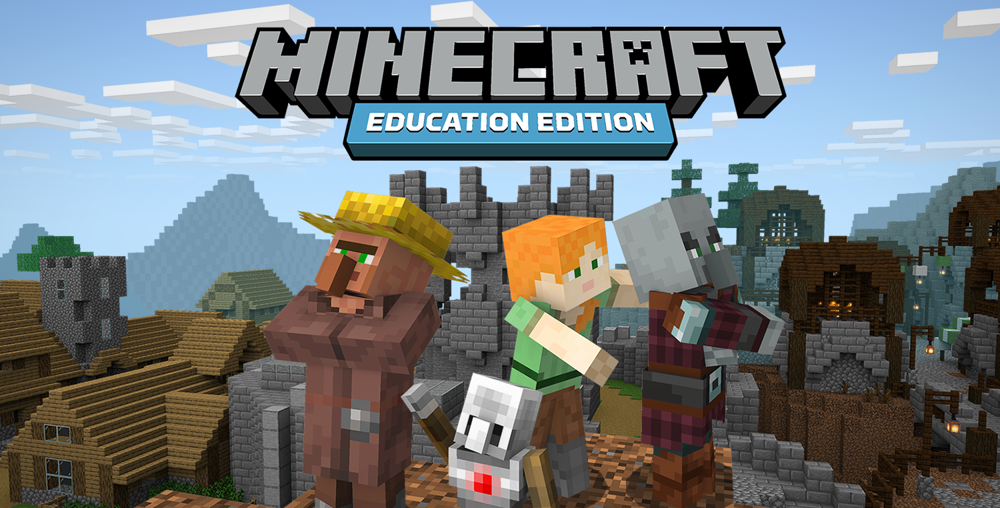
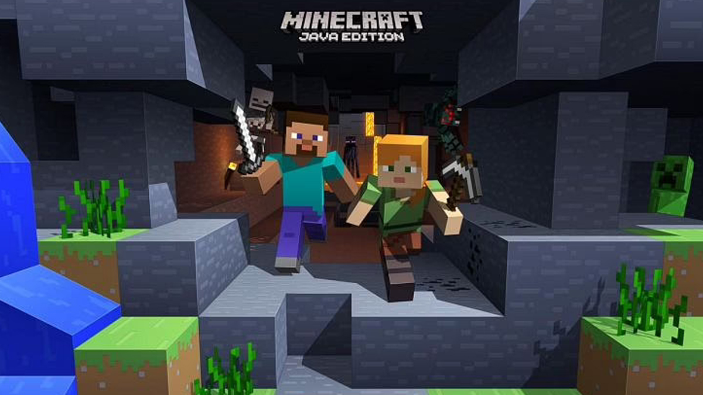
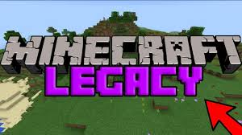
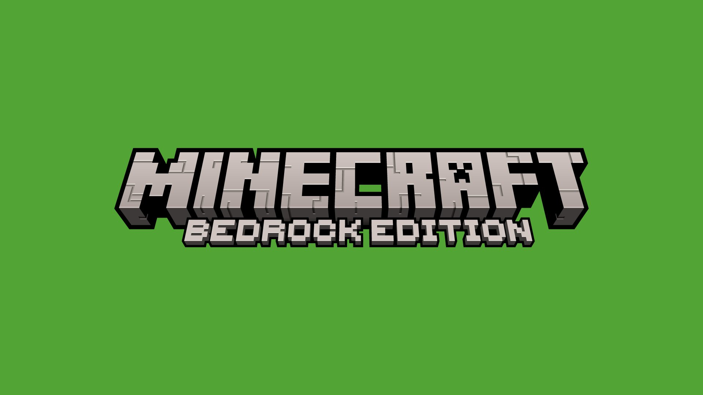

| Año de lanzamiento | Desarrolladora | Género | Clasificación |
|---|---|---|---|
| 2011 | Mojang Studios | Sandbox | Apto para mayores de 10 años |
Es un juego de construcción y aventuras en mundo abierto lanzado en 2011 por Mojang Studios, y tuvo un gran impacto en la industria de los videojuegos por varias razones:
Minecraft es a menudo considerado como el primer juego de construcción en mundo abierto que popularizó el género de los juegos sandbox. El juego permitía a los jugadores construir estructuras desde cero y crear mundos virtuales usando bloques, lo que les daba una gran libertad creativa.
Minecraft ayudó a popularizar el fenómeno de los influencers de juegos en línea, ya que muchos jugadores comenzaron a publicar sus propios videos y transmisiones en línea mostrando sus mundos virtuales y creaciones. La comunidad de Minecraft es muy activa y dedicada, lo que ha llevado a la creación de muchos canales de YouTube y otros sitios web dedicados al juego.
Minecraft ha sido utilizado en muchos entornos educativos para enseñar a los niños habilidades de resolución de problemas, pensamiento crítico y creatividad. El juego también ha sido utilizado como una herramienta de terapia, ya que permite a los jugadores expresarse de forma creativa y explorar sus emociones.
Minecraft ha sido un gran éxito comercial y crítico, vendiendo más de 200 millones de copias en todo el mundo. El juego ha sido elogiado por su creatividad, jugabilidad y capacidad de involucrar a los jugadores en mundos virtuales.
Tras el gran éxito de Minecraft, el videojuego se porteó a distintos dispositivos para que todas las personas tengan la oportunidad de jugar
|  |  |  | |
|
Java Edition |
Legacy Edition |
Bedrock Edition |
Eduaction Edition |
Dungeons |